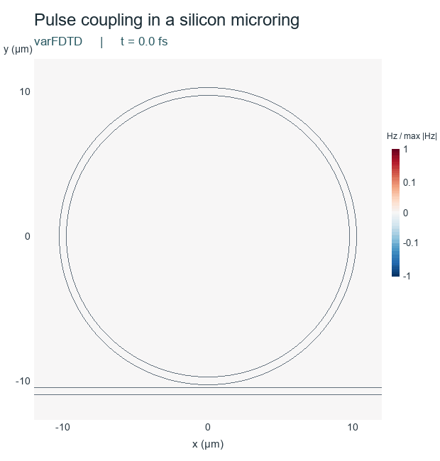
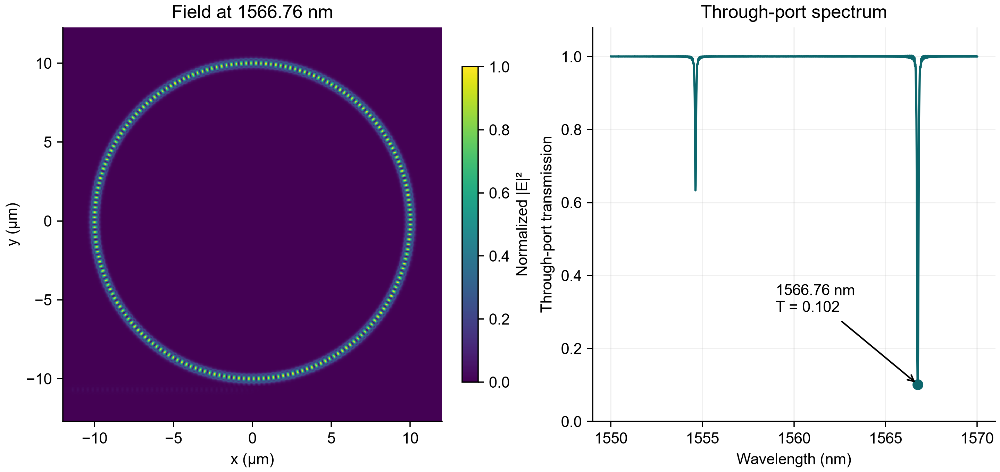

All projects
Resonators
Silicon microring resonator
I used varFDTD to model a 10 µm-radius silicon ring next to a straight waveguide, across a 190 nm gap.

The pulse enters from the lower left and splits between the straight guide and ring. Red and blue show signed H_z on a shared nonlinear scale.

Through-port transmission drops to 10.2% at 1566.76 nm. The field map at that wavelength shows confinement along the ring.